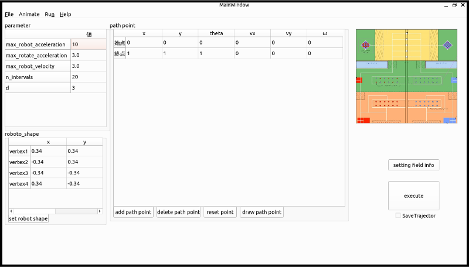
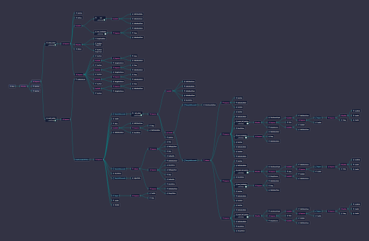
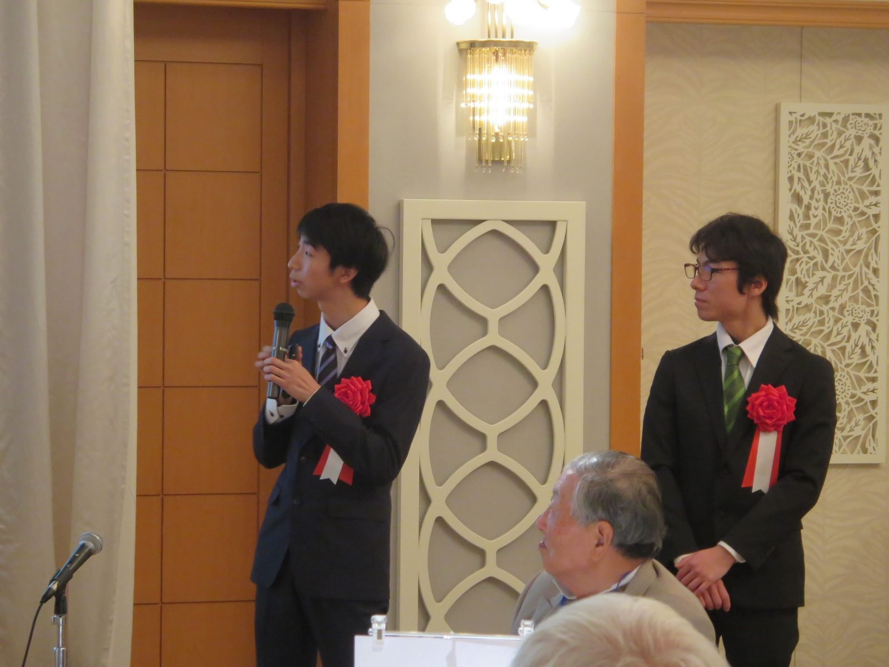

活動内容
※サークルで作成したコードはお見せできません。ご了承ください
軌道生成プログラムを作成
- 開発背景は制御をROS2に使用したことで前年度まで使用していた軌道生成のプログラムを使用できなくなったこと、2024年度のルールでは全自動が要求されていたことが挙げられる
- 始点・終点・経由点の座標と速度およびロボットの基本情報を指定することで時間最適化問題の制約条件を設定して時間に対応した位置・速度・加速度という軌道を求められるツール
- 非線形最適化問題設定は直接コロケーション法という各離散化点での状態方程式の成立を制約条件と追加する手法を採用
- コロケーション点はルジャンドル関数の停留点を採用
- 状態方程式の近似はラグランジュ補完多項式を採用
- データはJSON形式で出力をしてファイルに保存することが可能
- GUIはPyQtを用いて作成
- 時間最適化問題の設定と解を求めるのはPythonライブラリのCasadiを使用
- 軌道生成時の動画はこちら

ROS2を使用した制御
- 導入背景は前年度までは自作ライブラリを採用していたがコロナ明け以降メンテナンスが不十分であることが多く、これらの問題を解決するためにROS2を導入
- ROS2というロボット開発のために必要なツール群をまとめたミドルウェアとros2_controlというROS2を使用したロボット実機を制御するためのフレームワークを使用したプログラム作成
- BT(Behaviour Tree)を使用したロボット一連の動きの制御
- 実装はC++およびPythonを使用
- 軌道最適化ツールで得られたJSONデータから実際ロボットの目標速度の指令を渡すノードを作成

マネジメント
- 背景は前年度の敗因を分析した結果、課題は技術力だけでなくタスクの不透明さやコミュニケーション不足だと判明したことである
- 解決策としてメンバーと相談したうえでプロジェクトの開発体制にスクラム開発を導入
- 予算不足の問題を解決するためにスポンサーを新たに一つ獲得
- チーム間でのモチベーションの差を埋めるために定期的な目標として以下のことを行った
- 他校との練習試合
- 年1度のOBへの報告会を2度開催
- 蔵前工業会（東工大同窓会組織）でサークル活動についてプレゼンテーション（発表内容はこちら）

動作の様子
2023大会紹介ビデオ
2024大会紹介ビデオ
2023大会本番様子
2024大会本番様子